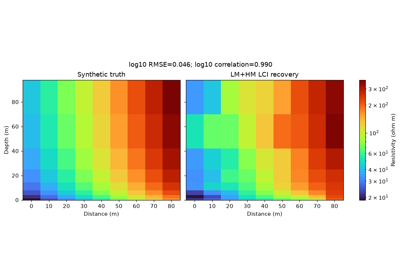
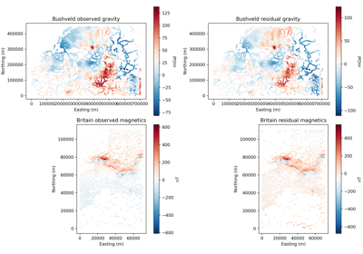
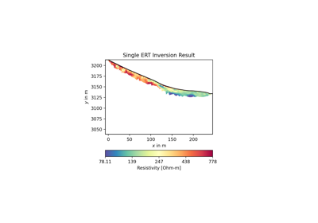
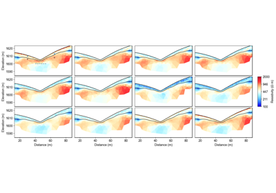
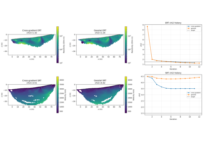
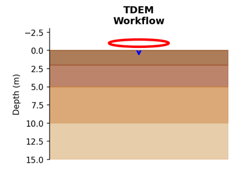
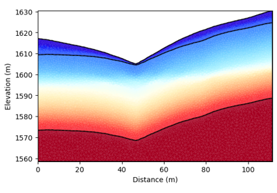
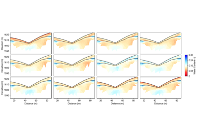
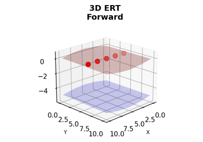

Examples Gallery#
This gallery contains comprehensive examples demonstrating the capabilities of PyHydroGeophysX for integrating hydrological model outputs with geophysical forward modeling and inversion.
The examples are organized to show the complete workflow from loading hydrological model data to performing geophysical inversions:
Basic Examples:
Ex_model_output.py: Loading and processing MODFLOW and ParFlow model outputs
Ex_ERT_workflow.py: Workflow for integrating hydrological model outputs with ERT forward modeling and inversion
Time-Lapse Analysis:
Ex_Time_lapse_measurement.py: Creating synthetic time-lapse ERT measurements
Ex_TL_inversion.py: Time-lapse ERT inversion techniques
Ex_TL_inversion_memory.py: Comparing memory-optimized and standard time-lapse ERT inversion
Ex_structure_TLresinv.py: Structure-constrained time-lapse inversion
Field Data Processing and Inversion:
Ex_ERT_single_inversion.py: Single-survey ERT inversion from field data
Ex_EM_line_section.py: Airborne VTEM line calibration and stitched 1D inversion
Ex_TEM_LMHM_LCI.py: Bundled nine-station LM+HM project and line LCI inversion tested against a known resistivity model
Ex_gravity_magnetics_inversion.py: Gravity and magnetic QC, forward modeling, and compact 3D inversion
Seismic Methods:
EX_SRT_forward.py: Seismic refraction tomography (SRT) forward modeling
Ex_SRT_inv.py: Seismic refraction tomography (SRT) inversion and analysis
Advanced Applications:
Ex_Structure_resinv.py: Structure-constrained resistivity inversion
Ex_joint_inversion.py: Joint ERT-SRT inversion with cross-gradient coupling and geostatistical regularization
Ex_hydro_to_multigeophys.py: Converting one hydrological profile to ERT, SRT, TDEM, FDEM, and gravity responses
Ex_MC_Hydro.py: Monte Carlo uncertainty quantification for water content estimation
Each example includes detailed comments and demonstrates best practices for watershed geophysical monitoring applications.

Ex. Loading and Processing Hydrological Model Outputs


Recovered Section Against the Truth

Ex. Gravity and Magnetics Processing and Inversion

Ex. Single ERT File Inversion (No Time-Lapse)

Ex. Structure-Constrained Time-Lapse Resistivity Inversion

Ex. Seismic Refraction Tomography (SRT) Inversion and Interface Delineation

Joint ERT-SRT Inversion: Cross-Gradient and Geostatistical Coupling

Ex. TDEM Workflow: From Hydrological Models to EM Responses and Inversion

Ex. Seismic Refraction Tomography (SRT) Forward Modeling

Ex. Creating Synthetic Time-Lapse ERT Measurements

Ex. ERT Workflow: From Hydrological Models to ERT responses and Inversion

Ex. Monte Carlo Uncertainty Quantification for Hydrologyic Properties Estimation

3D ERT Forward Modeling with MODFLOW Integration